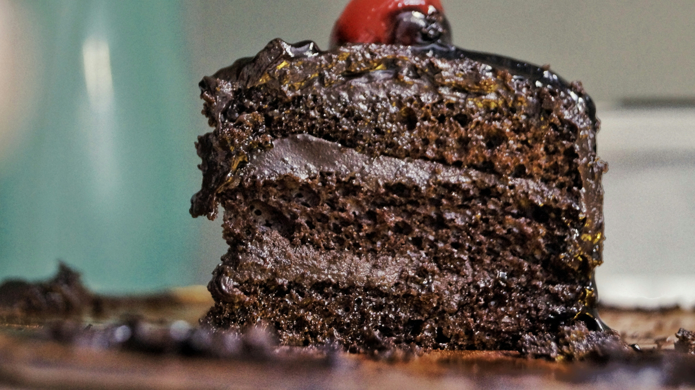

Bolo de Chocolate
Voltar para a página inicial

Essa é uma receita simples de bolo de chocolate caseiro.
Ingredientes
- 2 xícaras de farinha de trigo
- 1 xícara de açúcar
- 1 xícara de chocolate em pó
- 3 ovos
- 1 xícara de leite
- 1 colher de fermento
Modo de preparo
- Misture os ovos, o açucar e o leite.
- Adicione a farinha e o chocolate em pó.
- Misture bem até formar uma massa homogênea.
- Adicione o fermento e misture levemente.
- Leve ao forno por aproximadamente 35 minutos.